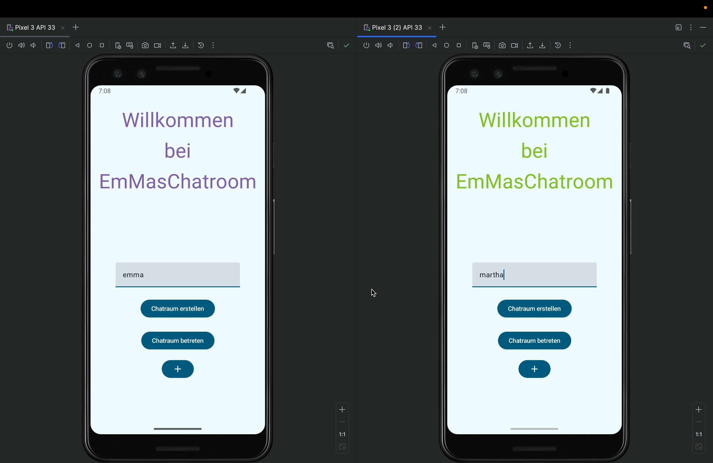
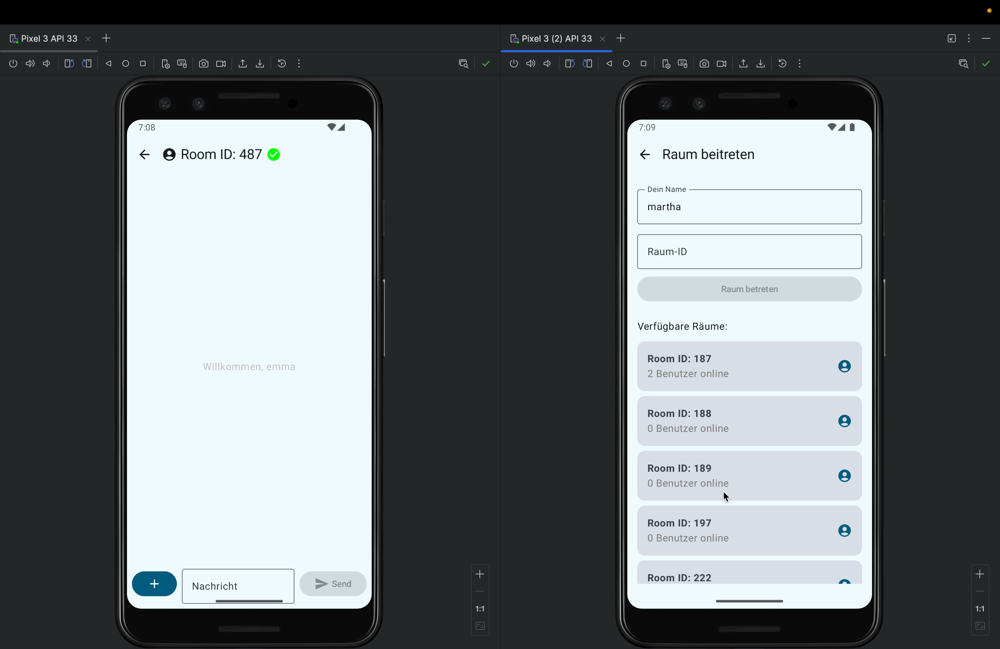
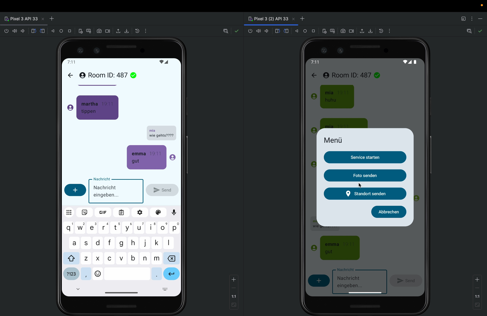
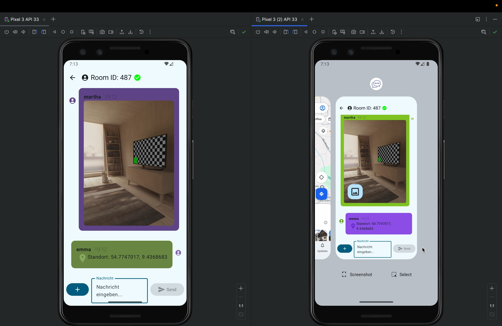
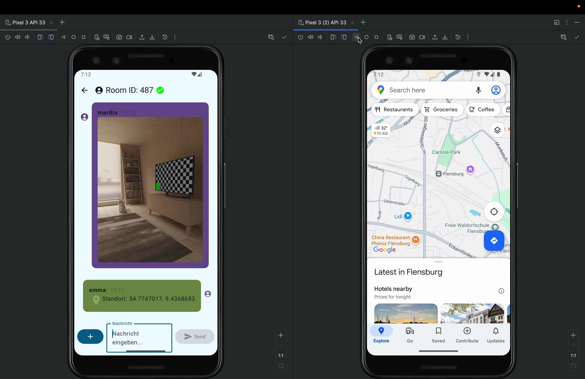

Emma's Chatroom (Android App)
Im dritten Semester haben wir im Modul Mobile Computing als Partnerarbeit zu zweit eine native Android-Chat-Applikation („EmMasChatroom“) entwickelt. Die App kommuniziert in Echtzeit mit einem zentralen Server und bietet neben Raumverwaltung auch Bildübertragung, Hintergrund-Services und GPS-Standortfreigabe mit Kartenintegration.
App-Screenshots & Funktionen

Startbildschirm & Anmeldung — Individuelle Namenseingabe und parallele Initialisierung beider Geräte

Raumübersicht & Beitritt — Liste aller aktiven Chaträume mit Anzeige der Benutzerzahl in Echtzeit

Echtzeit-Chatverlauf — Farbcodierte Chatblasen, Zeitstempel, Benutzer-Avatare und Antwortfunktion

Erweitertes Aktionsmenü — Native Android-Schnittstellen für Hintergrund-Services, Kamera und Standort

Multimedia & Standort — Bildübertragung im Chatverlauf sowie GPS-Standortfreigabe per Klick

Kartenintegration — Direkte Anzeige des geteilten Standorts des Chatpartners in Google Maps